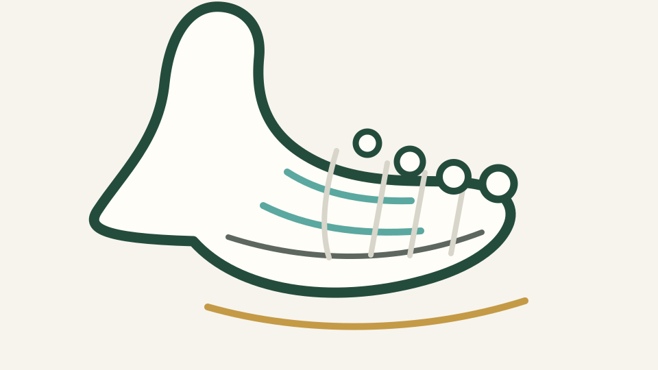

ETZ Elisabeth
Hilvarenbeekseweg 60
5022 GC Tilburg
Route 47

Orthopedisch chirurg
drs. Matthijs van Dam is orthopedisch chirurg in het Orthopedisch Centrum ETZ te Tilburg. Zijn aandachtsgebieden zijn voet- en enkelchirurgie, sportletsel, knieartrose en leefstijlgerelateerde gewrichtsklachten, waaronder artrose bij obesitas.
Vanuit die opgebouwde expertise werkt hij ook op projectbasis als zelfstandig adviseur zorgontwikkeling. Daarnaast doet hij onderzoek binnen lopende projecten en houdt hij zich graag bezig met bredere zorginnovatie, zoals onderwijs voor orthopedisch chirurgen in opleiding en digitale toepassingen zoals We Walk voor patiënten met artrose en medewerkers.
Deze site is geen patiëntportaal en biedt geen medisch advies op maat.
Locaties
Patiëntenzorg loopt via het Orthopedisch Centrum ETZ. drs. van Dam werkt op ETZ Elisabeth en ETZ TweeSteden. Voor verwijzing, afspraken en praktische informatie blijven de officiële ETZ-kanalen leidend.
Hilvarenbeekseweg 60
5022 GC Tilburg
Route 47
Dr. Deelenlaan 5
5042 AD Tilburg
Route 73
Expertise
Voorvoet
Scheefstand van de grote teen met pijn, drukplekken of schoenproblemen. Behandeling hangt af van klachten, stand en verwachtingen.
Voorvoet
Slijtage van het grote-teengewricht kan afwikkelen pijnlijk maken. Soms helpt schoenaanpassing, soms is operatie bespreekbaar.
Voorvoet
Een kromstand van de tenen kan drukplekken, pijn of schoenproblemen geven. Vaak begint de behandeling met ruimte, bescherming en schoenadvies.
Voorvoet
Pijn onder de bal van de voet vraagt om kijken naar belasting, stand, schoeisel en soms steunzolen of aanvullende behandeling.
Voorvoet
Een pijnlijke knobbel aan de buitenzijde van de voorvoet kan ontstaan door stand, druk en schoenvorm. De aanpak hangt af van de ernst van de klachten.
Voet en enkel
Blijvend doorzwikken vraagt aandacht voor kracht, balans en soms herstel van enkelbanden.
Voet en enkel
Enkelartrose vraagt maatwerk: van schoenaanpassing en oefentherapie tot artrodese of enkelprothese.
Voet en enkel
Achillespees- en andere peesklachten herstellen vaak langzaam. Doseren, oefenen en belasting opbouwen zijn meestal belangrijk.
Voet en enkel
Een veranderende voetstand kan pijn en vermoeidheid geven. De behandeling loopt van steunzool en oefentherapie tot operatie in geselecteerde situaties.
Voet en enkel
Een kraakbeen-botafwijking kan pijn, zwelling of blokkeren geven. Dit vraagt zorgvuldige beoordeling bij knie of enkel.
Knie
Pijn, belastbaarheid, leefstijl, oefentherapie en timing van een prothese tellen allemaal mee.
Knie
Niet elke meniscusscheur vraagt om een operatie. Leeftijd, artrose, blokkeren van de knie en herstel met oefentherapie wegen mee.
Sport
Bij sportletsel rond de kruisband tellen stabiliteit, sportdoelen, spierfunctie en verwachtingen mee in de keuze voor herstelroute.
Knie
Pijn rond de knieschijf hangt vaak samen met belasting, spierfunctie en bewegingspatroon. Gerichte oefentherapie is vaak de basis.
Knie
Een knieprothese komt pas in beeld als klachten, beperkingen, röntgenbeeld en eerdere behandeling samen voldoende aanleiding geven.
Leefstijl
Bewegen is meestal onderdeel van artrosezorg. Het gaat om haalbare, regelmatige belasting zonder oordeel.
Leefstijl
Gewicht, pijn en bewegen hangen complex samen. Goede zorg bespreekt dit zonder stigma en met haalbare stappen.
Leefstijl
Conditie, spierkracht, voeding, slaap en stoppen met roken kunnen invloed hebben op herstel en operatierisico's.
Leefstijl
Een stappendoel kan motiveren, maar moet passen bij klachten en belastbaarheid. Soms is een kleiner startdoel beter.
Leefstijl
Behandelkeuzes worden beter als medische mogelijkheden, persoonlijke doelen en wat iemand zelf kan doen samen worden besproken.
Er staan nog geen onderwerpen bij dit filter.
Projecten
Een selectie van projecten uit mijn werk op het snijvlak van orthopedie, leefstijl, onderzoek, onderwijs en digitale zorgontwikkeling. Bekijk daarnaast ook de publicaties en bijdragen.

NOV-project
Over teachable moments en het zorgvuldig bespreekbaar maken van leefstijl in orthopedische zorg.
Bekijk project
Onderzoek
Een digitaal transmuraal zorgpad voor artrose en obesitas, mede mogelijk gemaakt door Heracleum Hulpfonds, Leefstijlcoalitie en Vaillant Fonds.
Bekijk project
Digitale innovatie
Een AR-project met Tilburg University om wandelen laagdrempelig, motiverend en speels te ondersteunen.
Bekijk projectArtikelen

Medewerkers
Een laagdrempelige voetscreening voor medewerkers die veel staan en lopen tijdens hun werk.
Lees artikel
Patiënten gezocht
Op maandag 29 juni 2026 zoeken we patiënten die online willen meedenken over leefstijl in orthopedische zorg.
Lees artikel
Patiënten
Uitleg over pseudoartrose, revisie-artrodese en 3D-planning bij complexe voet- en enkelchirurgie.
Lees artikelDecember 2025
Over de subsidie voor de onderzoeksopzet en dataverzameling binnen het digitale zorgpad.
Lees artikelGosens T, van Dam MJJ, Korst J, Maas L, Aarnoudse G. Nederlands Tijdschrift voor Geneeskunde. 2026;170:D8889. PMID: 41810568.
Dit artikel beschrijft waarom artrosezorg meer vraagt dan alleen opereren wanneer klachten ernstig worden. Gestructureerde uitleg, oefentherapie, leefstijlondersteuning en regionale samenwerking kunnen helpen om mensen langer mobiel te houden en soms een operatie uit te stellen.
De praktische boodschap: artrosezorg moet beter georganiseerd worden rond de patiënt, met een duidelijke rol voor huisarts, fysiotherapeut, leefstijlbegeleiding en orthopedie.
Bekijk op PubMedVan Dam M. Een prik of een preek? Medisch Contact. 1 mei 2025.
In deze praktijkbijdrage beschrijft drs. van Dam de spanning tussen wat patiënten verwachten van orthopedische zorg en wat goede artrosezorg soms ook vraagt: een gesprek over leefstijl, gewicht, bewegen en haalbare ondersteuning.
De kern: leefstijlbegeleiding hoort niet als oordeel of preek te voelen, maar kan wel een vanzelfsprekend onderdeel zijn van een orthopedisch zorgpad wanneer obesitas en artrose elkaar versterken.
Lees bij Medisch Contactvan Es LJM, van Dam MJJ, de Wit BWK, Aaftink JFA, Benner JL, Kerkhoffs GMMJ, Burger BJ, Tsuchida AI. Journal of Foot and Ankle Surgery. 2026. DOI: 10.1053/j.jfas.2025.10.013. PMID: 41223927.
Bij een totale enkelprothese wordt gekeken hoe de prothese ten opzichte van het scheenbeen wordt geplaatst. Deze studie onderzocht of het behouden van de natuurlijke hoek van het onderste scheenbeen invloed heeft op de overleving van de enkelprothese.
De kern: in deze groep werd geen duidelijk negatief effect gevonden van het behouden van de natuurlijke stand op de overleving van de prothese. Dat helpt bij het nadenken over maatwerk in enkelprothesechirurgie.
Bekijk op PubMedContact
Deze website is geen patiëntportaal. Voor afspraken, patiëntenzorg en medische vragen blijven de officiële ETZ-kanalen de juiste route. drs. van Dam werkt als tweedelijns zorgverlener; bij nieuwe of niet-acute klachten loopt verwijzing meestal via de huisarts en, waar passend, in overleg met de fysiotherapeut.
Voor afspraken, verwijzingen, praktische ziekenhuisinformatie en vragen over lopende zorg kun je contact opnemen met de polikliniek Orthopedie van het ETZ. drs. van Dam werkt op locatie ETZ TweeSteden en ETZ Elisabeth.
Voor vragen rond lopende projecten of professionele samenwerking loopt contact via de betrokken projectorganisaties, zoals ETZ, NOV of samenwerkingspartners. Bekijk ook de pagina voor professionals. Deel via deze website geen medische gegevens.
Voor een eerste vraag over advies, consultancy of projectontwikkeling kan per e-mail contact worden opgenomen. Gebruik deze route niet voor patiëntvragen of afspraken.
De informatie op deze website is algemeen van aard. De inhoud vervangt geen consult, diagnose of behandeladvies van een arts. Gebruik voor medische vragen, afspraken of spoed altijd de officiële zorgkanalen.